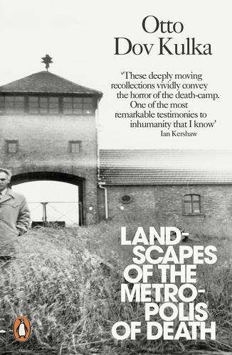

Research note · 22 September 2026
Shakespeare in the Metropolis of Death
Otto Dov Kulka and European humanism at Auschwitz
A childhood encounter with Shakespeare in Auschwitz became for Otto Dov Kulka both an education in European humanism and a lasting image of the failure of that tradition.

It was not until 2013 that the Czech Israeli historian and Auschwitz survivor Otto Dov Kulka published his Holocaust memoir, Landscapes of the Metropolis of Death. Kulka had undertaken a vast amount of ‘strict and impersonally remote research’ on the history of European antisemitism and the Holocaust, specializing particularly on the question of German popular opinion about the Jews in the period of the Third Reich.
But in Landscapes, Kulka returns to the camp through fragments of memory, dreams, and imagination, piecing together his ‘private mythology’ of the camp.
He had arrived at Auschwitz from Theresienstadt in September 1943, aged only ten, and was imprisoned with his mother in the so-called Theresienstadt Family Camp. The Family Camp was a strange exception within Auschwitz: families initially remained together; prisoners kept clothes and hair; children attended lessons and even took part in cultural activities and performances. These apparent privileges formed part of a Nazi deception designed in part for a possible Red Cross visit. The cultural life Kulka remembers unfolded within an institution created to conceal mass murder, only a few hundred metres way from the crematoria.

It was in the camp infirmary that Kulka shared a bunk with an older boy named Herbert. Herbert gave him a hidden copy of Crime and Punishment and told the young Kulka who ‘Beethoven was, and Goethe, and Shakespeare’, introducing Kulka to the culture these canonical figures had bequeathed: ‘European humanism’.
Auschwitz would seem to be the last place anybody would be inducted into the cultural world of European humanism. The camp has become a byword for unimaginable brutality. But for Kulka, it was transformative: he writes that his ‘encounter with the humanistic heritage of European culture’ allowed for moments of transcendence, representing a ‘protest’ against the ‘immutable law’ of inhumanity and death in Auschwitz. He also tells us that his camp education formed ‘the moral basis’ of his ‘approach to culture, to life, almost to everything. Historical, functional, and normative values and patterns of life were transformed into something in the order of absolute values’. Kulka reflects that, because there was no future for those interned in the camp, education took place in and for itself. It was its own, absolute’ end.
But Kulka also tells us that Herbert, for all his impressive cultural knowledge and his undimmed confidence in the humanist heritage, died in Auschwitz, and that his conversations with his bunkmate in the Family Camp took place right underneath the looming shadows of the chimneys from the crematoria – the place where not only Jews like Herbert but so much of ‘European humanism’ was reduced to ash.
So when the child inmates of the Family Camp were coerced into singing ‘Ode to Joy’ by the Nazi authorities, Kulka saw the singing as both a protest, a testament to human dignity, and as a moment of ‘extreme sarcasm’, which rendered the humanistic heritage little more than a grim joke. This is not an ambivalence Kulka attempts to resolve.
His recollection of Herbert offers no comforting claim that Shakespeare survived Auschwitz untouched. Shakespeare represents a culture that allowed Kulka to imagine life beyond the camp, ‘an absolute value’. But he also belongs to a compromised European tradition whose promises were perverted, a culture that both inspired and failed him and Herbert.

Sources
Otto Dov Kulka, Landscapes of the Metropolis of Death, trans. Ralph Mandel (London: Penguin, 2013), especially pp. 27 and 48.
PEN Atlas interview with Otto Dov Kulka ↗, 24 April 2014.